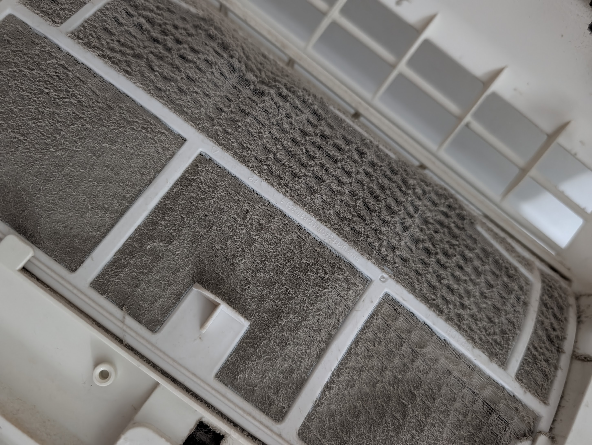
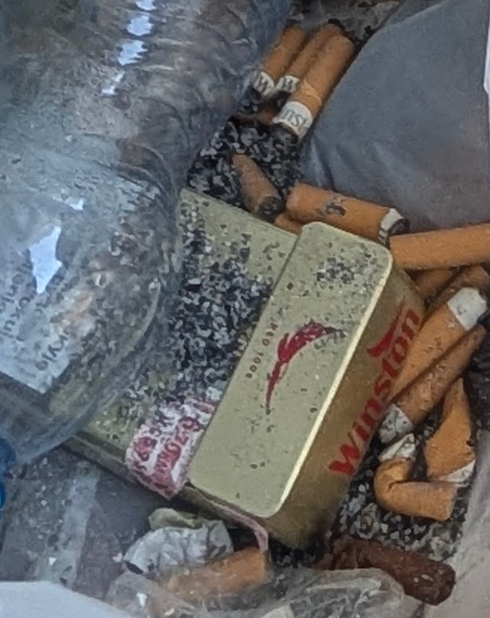
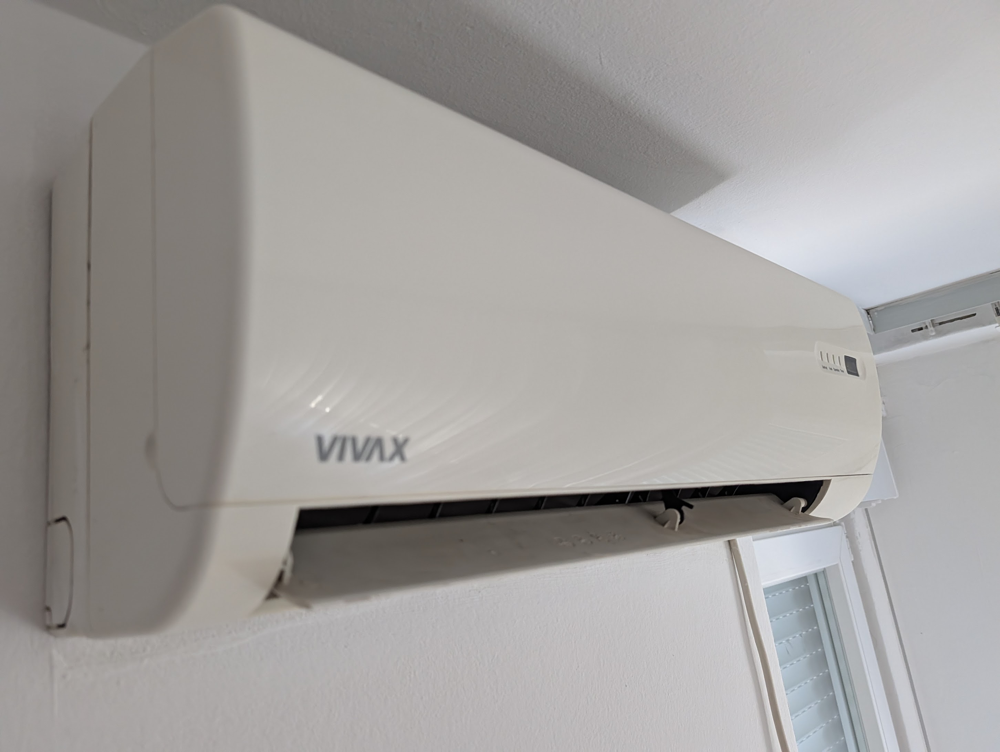
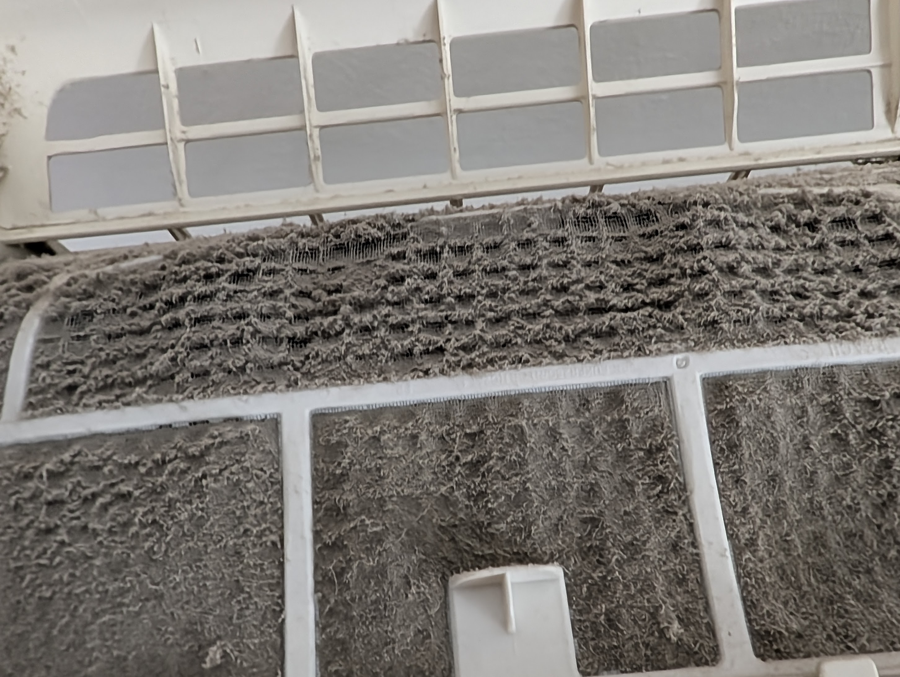
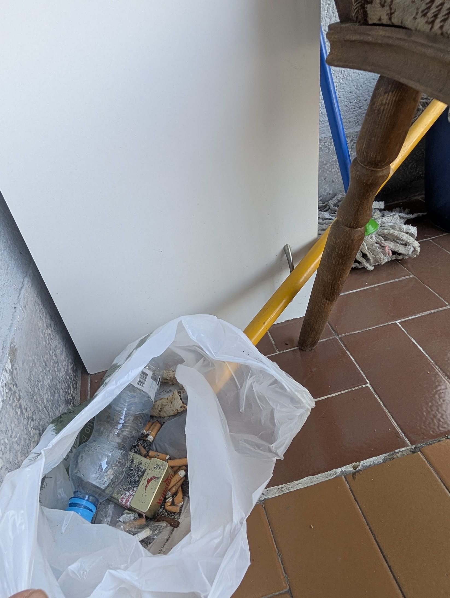
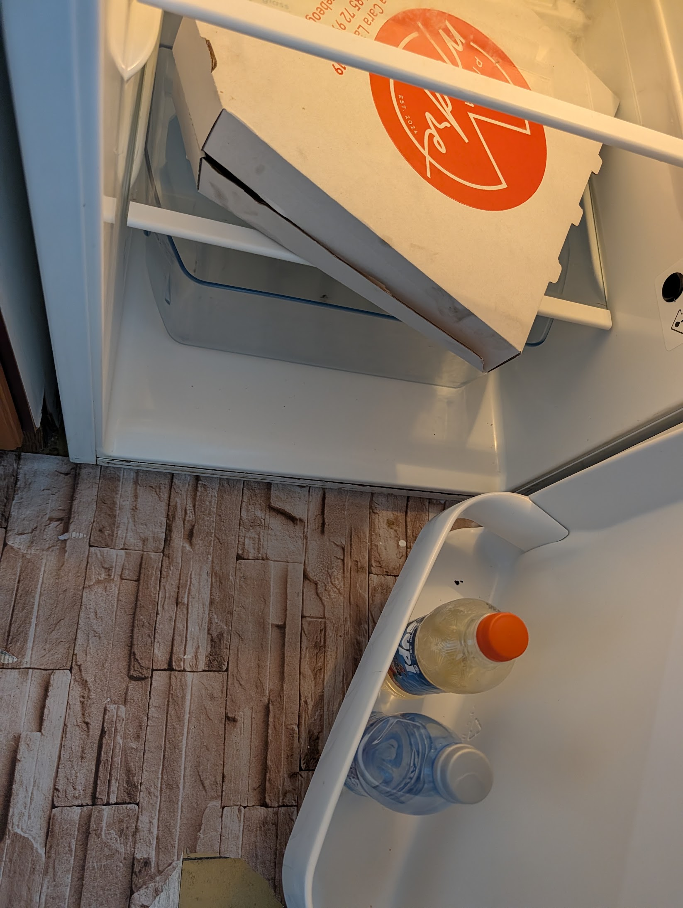
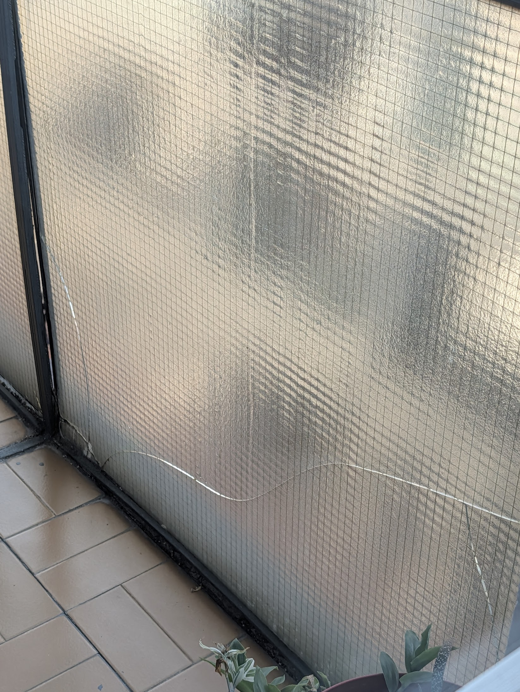

Cara Uroša 8/13, 11000 Belgrade, Serbia
Owner and host: Nataša
The air conditioner in this apartment is packed with dust and cannot be run. Switch it on and it blows that dust through the rooms you sleep and eat in. Nobody wants to breathe it, and dust loading like this is a well-known respiratory irritant — you don't need a pre-existing condition for it to matter.
So you leave it off. In a Belgrade summer that means no cooling at all — and because a split system is the heating as well, it means the same in winter.
The bathroom smells of sewage. Reported, the answer was that the pipes are "outside of my control" and that I could try pouring boiling water down the drains myself.
She agreed the apartment was unacceptable — and then did nothing. Told the flat had not been cleaned, she replied that it was "unexceptionable" — plainly meaning unacceptable — and apologised. Nothing was done. Told the rest, her position became "Unfortunately, I can't do anything about it" and "in this moment I can only help by listening."
Consider that offer. The person proposing to help by listening was the same person who had let the flat in that condition, declined to clean it, told me to clean it myself, promised money in writing, kept it, and then stopped answering altogether. Being listened to by her was not a remedy — it was the problem, restated as a kindness. What she was asking, in the end, was that I accept it.
Nataša knew about all of it. She was told, she agreed in writing that the filter was the problem, and she still refused to have it cleaned — she told me to wash it myself. She would not let me out of the booking while workmen were drilling and sawing in the common hallway immediately outside the apartment door, through the working day. She promised a refund in writing and did not pay it.
It photographs beautifully. That is not what staying here is like.

The air-conditioning filter10 Aug 2026, 14:39
The balcony at check-in9 Aug 2026, 17:34
Watch: the WiFi, and the drilling outside the doorRecorded in the apartmentDocumented 8–11 August 2026 by a guest who paid in full. The unit may since have been cleaned — I have no way to know. Everything below is what was found, when, and what the host said about it in writing.
The filter was matted shut (photographs below, taken 10 August). Asked when it had last been cleaned:
"A month and a half ago"
Host, 10 Aug 14:43
The quantity of dust in those photographs is not what six weeks produces. Asked for it to be cleaned that day:
"They are fully booked for today … the filter you can rinse under water or vacuum if you think it is causing you allergies."
Host, 10 Aug 14:52
That leaves two options, and both are bad. Run it, and it drives that dust into the air of a one-bedroom flat — nobody wants to sleep in that, and heavy dust loading is a recognised respiratory irritant whether or not you arrive with a condition. Or switch it off, which is what I did, and have no cooling in a Belgrade August.
And this is not only a summer problem. The wall unit is a split system — the same box that cools is the heating. A filter in that state means the apartment has no working climate control in either direction, all year.
Workmen drilled and sawed through the working day in the common hallway immediately outside the apartment door (see the video below). When I said the apartment was unworkable and asked to leave and be refunded, the answer was no.
"every apartment has a right to be loud" … "Balcan is not set up for remote workers"
Host, 10 Aug 10:44 and 10:51
You are not getting released early from this booking, whatever happens in the building.
Uncollected rubbish inside the flat, old pizza and old drinks in the fridge, cigarette ends on the balcony, and a cracked balcony pane.
"What? I'll tell my housekeeping. That is unexceptionable. They forgot to take it out" … "I apologize"
Host, 9 Aug 17:39
Her word is "unexceptionable" — plainly meant as unacceptable. So this is not a dispute about standards. She agreed, in writing and immediately, that the state of the apartment was unacceptable.
Then nothing happened. The rubbish was still there the next day. When I asked for it to be removed, I was told housekeeping could not come until the following day and that I could leave the pizza box out on the balcony myself — followed by:
"I wish you told me you want them to take out the trash"
Host, 10 Aug 14:52
Having called it unacceptable herself, she did nothing about it and then suggested the problem was that I had not asked clearly enough. What she is actually asking, across the whole exchange, is that you accept it.
She agreed in writing to refund one night. Instead, the following day, the booking record was altered — removing that night, and with it her commission and the city tax on it.
No money was ever sent. I asked repeatedly — "Did you send money?", "I see no paypal. You said you would send yesterday." She stopped replying altogether.
The listing sells air conditioning, free WiFi and a recent renovation. The WiFi could not complete a speed test at all — pages took around twenty seconds and voice calls dropped continuously, for the whole stay. Told about it, the host said the provider had technical problems and could give no timeframe.




On the timestamps. Each photograph's camera clock falls within minutes of the message reporting that problem to the host — fridge and cigarettes at 17:29 and 17:34 against a 17:36 message; the filter at 14:39 against a 14:41 message. They were taken as things were found, not assembled afterwards. The original files retain the metadata.
If you are comparing places in Belgrade, check the photographs on these listings against the ones above before you book.
| Body | Grounds | Status |
|---|---|---|
| Booking.com | Health and safety; alteration of the booking record | Reported by guest |
| Airbnb — safety report | Air-conditioning maintenance, same unit | Reported by guest |
| Turistička inspekcija Ministarstvo turizma i omladine | Condition and maintenance of a categorised unit; guest registration; residence tax | Reported by guest |
| Sanitarna inspekcija Ministarstvo zdravlja | Hygiene of air-conditioning and plumbing in a unit let to the public | Reported by guest |
| Poreska uprava | Declared income and residence tax on the altered night | Reported by guest |
Accuracy and right of reply. Every quotation here is verbatim from written correspondence, and every figure comes from Booking.com's own invoice and system emails. This page states no claim I cannot document. If anything is shown to be inaccurate I will correct it and say on this page that I have. The host is welcome to reply and I will publish her response alongside this.
Rahul Lio
Guest, 8–11 August 2026
The same 60 m² flat at Cara Uroša 8/13 is resold under slightly different names across a dozen booking sites. If you are comparing places in Belgrade, check the photographs on any of these against the ones above before you book.
| Platform | Listed as | Rating shown | |
|---|---|---|---|
| Booking.com | Anywhere On Foot – Big Belgrade Fortress Flat – Free Parking | 9.8 (5) | Listing |
| Airbnb | Anywhere on Foot – FREE Parking | 4.5 (8) | Listing |
| Agoda | Anywhere On Foot - Belgrade Fortress | — | Listing |
| Bedandbreakfast.eu | Anywhere On Foot – Big Belgrade Fortress Flat | 10 (3) | Listing |
| Skyscanner | Anywhere On Foot – Big Belgrade Fortress Flat – Free Parking | — | Listing |
Why the ratings look good. Each platform shows a handful of reviews — five here, three there, eight on another. A property spread thinly across many sites never accumulates enough reviews on any one of them for a bad stay to move the number. That is what you are looking at when you see 9.8 out of 5 reviews.
If you stayed here, if you are deciding whether to book, or if you are the host and want to reply — write to me. I answer everything.
Submitting sends the information above, plus approximate country and IP address for abuse prevention, to the report author's private inbox.
Cara Uroša 8/13, 11000 Beograd, Srbija
Vlasnica i domaćica: Nataša
Klima uređaj u ovom stanu pun je prašine i ne može da se koristi. Kada ga uključite, tu prašinu razvejava po prostorijama u kojima spavate i jedete. Niko to ne želi da udiše, a ovoliko nataložena prašina poznat je iritant disajnih puteva — nije potrebno da imate ranije tegobe da bi vam smetalo.
Znači, držite je isključenu. Usred beogradskog leta to znači da hlađenja nema uopšte — a pošto isti split uređaj služi i za grejanje, isto važi i zimi.
Iz kupatila se oseća kanalizacija. Na prijavu je odgovoreno da su cevi „van moje kontrole" i da mogu da probam da sam sipam ključalu vodu u odvode.
Složila se da je stan u nedopustivom stanju — a zatim nije uradila ništa. Kada sam prijavio da stan nije očišćen, odgovorila je da je to „unexceptionable" — očigledno u značenju nedopustivo — i izvinila se. Ništa nije preduzeto. Za sve ostalo njen stav je postao „Nažalost, ne mogu ništa da uradim po tom pitanju" i „u ovom trenutku mogu da pomognem samo tako što ću vas saslušati."
Razmislite o toj ponudi. Osoba koja nudi pomoć time što će vas saslušati jeste ista ona koja je stan izdala u takvom stanju, odbila da ga očisti, rekla meni da ga sam čistim, pismeno obećala novac, zadržala ga, a zatim potpuno prestala da odgovara. To što vas ona sasluša nije lek — to je isti problem, samo predstavljen kao ljubaznost. Ono što je na kraju tražila jeste — da to prihvatim.
Nataša je za sve to znala. Bila je obaveštena, pismeno se složila da je filter uzrok, i svejedno odbila da ga očisti — rekla mi je da ga sam operem. Nije htela da me pusti iz rezervacije dok su radnici ceo radni dan bušili i sekli u zajedničkom hodniku neposredno ispred vrata stana. Pismeno je obećala povraćaj novca i nije ga isplatila.
Na fotografijama izgleda odlično. Boravak nije takav.
Dokumentovano 8–11. avgusta 2026. od strane gosta koji je platio u celosti. Apartman je u međuvremenu možda očišćen — to ne mogu znati. Sve ispod je ono što je zatečeno, kada je zatečeno i šta je domaćica o tome pismeno rekla.
Filter je bio potpuno zapušen (fotografije ispod, snimljene 10. avgusta). Na pitanje kada je poslednji put čišćen:
„Pre mesec i po dana"
Domaćica, 10. avg 14.43
Količina prašine na tim fotografijama ne odgovara šest nedelja. Na traženje da se očisti istog dana:
„Danas su potpuno zauzeti… filter možete isprati vodom ili usisati ako mislite da vam izaziva alergiju."
Domaćica, 10. avg 14.52
Ostaju dve mogućnosti i obe su loše. Uključiti je — i tu prašinu razvejati po jednosobnom stanu; niko ne želi da spava u tome, a ovoliko nataložena prašina priznat je iritant disajnih puteva bez obzira na to da li ste došli sa tegobama. Ili je držati isključenu, što sam i radio, i ostati bez hlađenja usred beogradskog avgusta.
A ovo nije samo letnji problem. Zidni uređaj je split sistem — ista jedinica koja hladi služi i za grejanje. Filter u ovakvom stanju znači da stan nema ispravnu klimatizaciju ni u jednom smeru, tokom cele godine.
Radnici su ceo radni dan bušili i sekli u zajedničkom hodniku neposredno ispred vrata stana (videti snimak ispod). Kada sam rekao da se u stanu ne može boraviti ni raditi i tražio da odem i dobijem novac nazad, odgovor je bio ne.
„svaki stan ima pravo da bude bučan" … „Balkan nije prilagođen ljudima koji rade od kuće"
Domaćica, 10. avg 10.44 i 10.51
Iz ove rezervacije nećete izaći ranije, šta god da se dešava u zgradi.
Neodneto smeće u stanu, stara pica i stara pića u frižideru, opušci na terasi i napuklo staklo na terasi.
„Molim? Reći ću spremačici. To je unexceptionable. Zaboravili su da ga iznesu" … „Izvinjavam se"
Domaćica, 9. avg 17.39 — original na engleskom
Reč koju je upotrebila je „unexceptionable", očigledno u značenju unacceptable — nedopustivo. Dakle, ovde nema spora oko standarda. Pismeno je i odmah priznala da je stanje stana nedopustivo.
A zatim se ništa nije dogodilo. Smeće je i sutradan bilo tu. Kada sam tražio da se iznese, rečeno mi je da spremačica ne može doći pre narednog dana i da kutiju od pice mogu sam da ostavim na terasi — uz:
„Voleo bih da ste mi rekli da želite da iznesu smeće"
Domaćica, 10. avg 14.52
Pošto je i sama to nazvala nedopustivim, ništa nije preduzela, a zatim je sugerisala da je problem u tome što nisam dovoljno jasno tražio. Ono što u celoj prepisci zapravo traži jeste — da to prihvatite.
Pismeno je pristala da vrati iznos za jedno noćenje. Umesto toga je narednog dana izmenjena evidencija rezervacije — uklonjeno je to noćenje, a sa njim i njena provizija i boravišna taksa za tu noć.
Novac nikada nije poslat. Pitao sam više puta — „Da li ste poslali novac?", „Ne vidim ništa na PayPal-u. Rekli ste da ćete poslati juče." Prestala je da odgovara.
Oglas nudi klima uređaj, besplatan WiFi i nedavno renoviranje. Internet nije mogao da završi ni test brzine — stranice su se učitavale oko dvadeset sekundi, a govorni pozivi prekidali, tokom celog boravka. Na prijavu je rečeno da provajder ima tehničkih problema i da rok nije poznat.
O vremenskim oznakama. Sat aparata na svakoj fotografiji pada u razmak od nekoliko minuta od poruke kojom je taj problem prijavljen domaćici — frižider i opušci u 17.29 i 17.34 naspram poruke u 17.36; filter u 14.39 naspram poruke u 14.41. Snimane su kako su stvari zaticane, a ne sastavljane naknadno. Originalni fajlovi čuvaju metapodatke.
Ako upoređujete smeštaj u Beogradu, uporedite fotografije sa ovih oglasa sa gornjima pre nego što rezervišete.
| Organ / platforma | Osnov | Status |
|---|---|---|
| Booking.com | Zdravlje i bezbednost; izmena evidencije rezervacije | Prijavio gost |
| Airbnb — prijava bezbednosti | Održavanje klima uređaja, isti apartman | Prijavio gost |
| Turistička inspekcija Ministarstvo turizma i omladine | Stanje i održavanje kategorisanog objekta; evidentiranje gosta; boravišna taksa | Prijavio gost |
| Sanitarna inspekcija Ministarstvo zdravlja | Higijena klima uređaja i vodovoda u objektu koji se izdaje gostima | Prijavio gost |
| Poreska uprava | Prijavljeni prihod i boravišna taksa za izmenjeno noćenje | Prijavio gost |
Tačnost i pravo na odgovor. Svaki citat je doslovno prenet iz pisane prepiske, a svaki iznos potiče iz računa i sistemskih poruka samog Booking.com-a. Stranica ne iznosi nijednu tvrdnju koju ne mogu da dokumentujem. Ako se pokaže da je nešto netačno, ispraviću i to na ovoj stranici navesti. Domaćica ima pravo na odgovor i objaviću ga uz ovaj tekst.
Rahul Lio
Gost, 8–11. avgusta 2026.
Isti stan od 60 m² u Cara Uroša 8/13 preprodaje se pod neznatno različitim nazivima na desetak sajtova za rezervacije. Ako upoređujete smeštaj u Beogradu, uporedite fotografije sa bilo kog od njih sa gornjima pre nego što rezervišete.
| Platforma | Naziv oglasa | Prikazana ocena | |
|---|---|---|---|
| Booking.com | Anywhere On Foot – Big Belgrade Fortress Flat – Free Parking | 9,8 (5) | Oglas |
| Airbnb | Anywhere on Foot – FREE Parking | 4,5 (8) | Oglas |
| Agoda | Anywhere On Foot - Belgrade Fortress | — | Oglas |
| Bedandbreakfast.eu | Anywhere On Foot – Big Belgrade Fortress Flat | 10 (3) | Oglas |
| Skyscanner | Anywhere On Foot – Big Belgrade Fortress Flat – Free Parking | — | Oglas |
Zašto ocene izgledaju dobro. Svaka platforma prikazuje po nekoliko recenzija — pet ovde, tri tamo, osam na trećoj. Objekat raspoređen na mnogo sajtova nikada ni na jednom ne skupi dovoljno recenzija da bi jedan loš boravak pomerio ocenu. To je ono što vidite kada piše 9,8 na osnovu pet recenzija.
Ako ste boravili u ovom stanu, ako se dvoumite oko rezervacije, ili ako ste domaćica i želite da odgovorite — pišite mi. Odgovaram na sve.
Slanjem se navedeni podaci, približna zemlja i IP adresa radi sprečavanja zloupotrebe prosleđuju u privatno sanduče autora izveštaja.